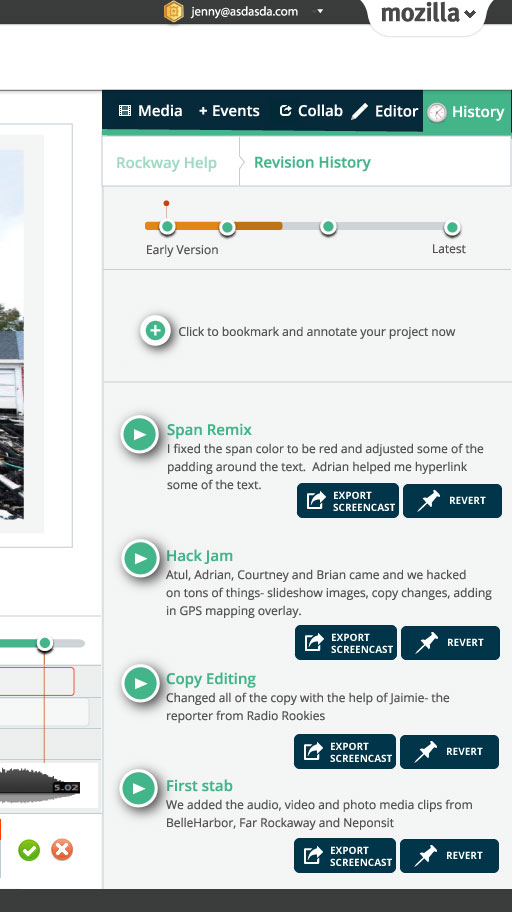
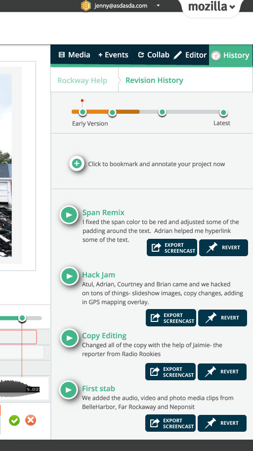

About
Jessica is dedicated to connecting people and ideas through new technologies and interactive experiences. As a community-based designer, Jessica is currently the Hive Labs Creative Lead at Mozilla, where she focuses on promoting openness and creativity in formal and informal learning environments. Jessica created the Hackasaurus project which helps teens learn how to code through hacking. This project later became part of the larger Webmaker platform. Jessica began her career in the curatorial department of Prints, Drawings and Photos at the Brooklyn Museum of Art. Over the last decade, she has worked at a variety of institutions dedicated to learning including the Museum of Arts and Design, The Rubin Museum of Art, The Institute of Play, Startl, The Hive and Sesame Workshop.
She founded OceanLab NYC, a project which asked parents, teachers and kids in the NYC community to investigate their urban coastal environment through casual interaction and play. A Rockaway Beach native, Jessica co-founded Rockaway Help in the wake of Hurricane Sandy and was named a White House Champion of Change for her civic hacktivism.
Writing & Speaking
I love to write and consider it part of my design process. I usually update my blog with recent publications. Additionally, I write curriculum and learning content on Mobile Design, Net Neutrality and Civic Hacking. I enjoy teaching and have worked with the New York Public Library, the American Museum of Natural History, Global Minumum and other non profits. I've spoken at the Digital Media & Learning Conference, Women & Technology and Tedx, and others globally.

 
